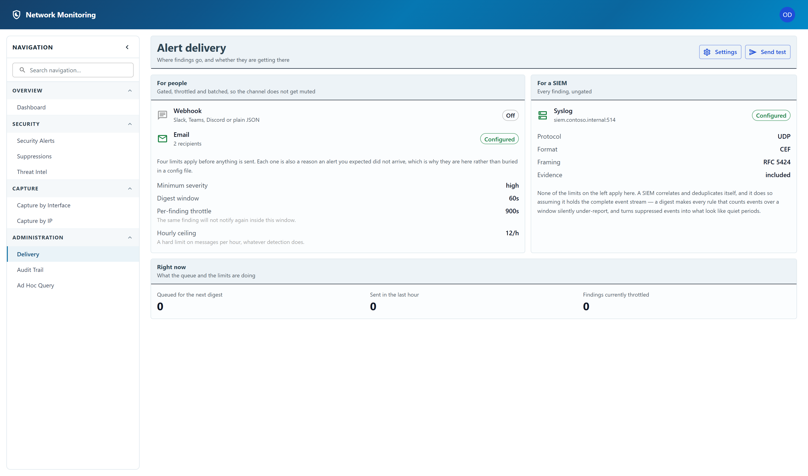

Alert delivery
Where findings go, and whether they are getting there.
Notification config fails silently by nature. A wrong webhook URL or a rejected SMTP password produces no error anybody sees until the night an alert does not arrive. This page exists so that is checkable in advance.

The two columns
For people covers the webhook and email channels. These are gated, throttled and batched, because a channel that produces four hundred messages in an hour gets muted by whoever receives it, and a muted channel delivers nothing at all.
For a SIEM covers syslog, and none of those limits apply to it. A SIEM correlates and deduplicates for itself, and it does so assuming it holds the complete event stream — a digest would make every rule that counts events over a window under-report, and suppressed events would look like quiet periods.
The four limits
Each one is also a reason an alert you expected did not arrive, which is why they are on the page rather than buried in a configuration file:
| Limit | What it does |
|---|---|
| Minimum severity | Nothing below this is delivered to a person. It is still detected, stored and shown on the alerts page. |
| Digest window | Findings are collected for this long and sent as one message rather than one message each. |
| Per-finding throttle | The same finding will not notify again inside this window, however many times it recurs. |
| Hourly ceiling | A hard limit on messages per hour, whatever detection does. |
Right now, at the foot of the page, shows what those limits are currently doing: how much is queued for the next digest, how much has been sent in the last hour, and how many findings are being held back by the throttle.
Proving it works
Send test sends a message to every configured channel and reports what happened to each one. It deliberately bypasses every gate above, including the master switch: the question it answers is can this reach you, and requiring the feature to be switched on first would make it useless for checking a configuration before committing to it.
The test message is clearly marked as a test, so nobody who receives it is alarmed.
Read the per-channel results rather than only the summary. A channel that is configured but cannot authenticate is reported as a failure with the reason — for email that reason names the exact settings that are unset, rather than a raw SMTP string.
Any signed-in account can see this page, including whether each channel is configured and what the limits are — it is the page you check when an alert did not arrive. Changing the settings and sending a test are restricted to administrators: a test causes outbound traffic to a third party, and would otherwise be a way for any account to make the server send messages on demand.